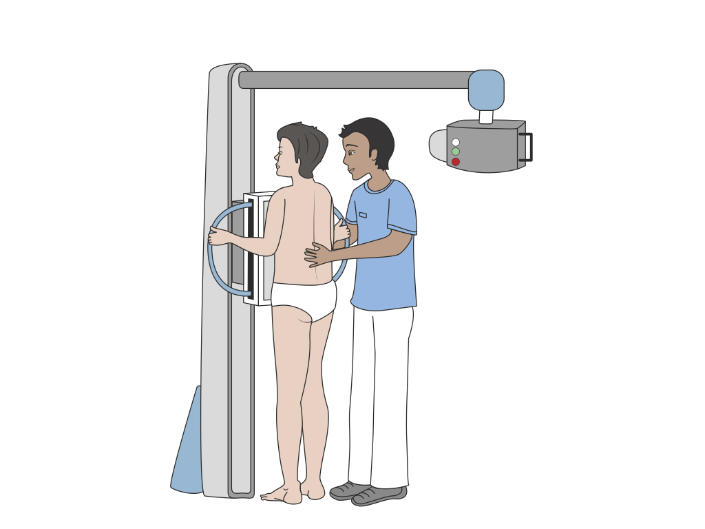
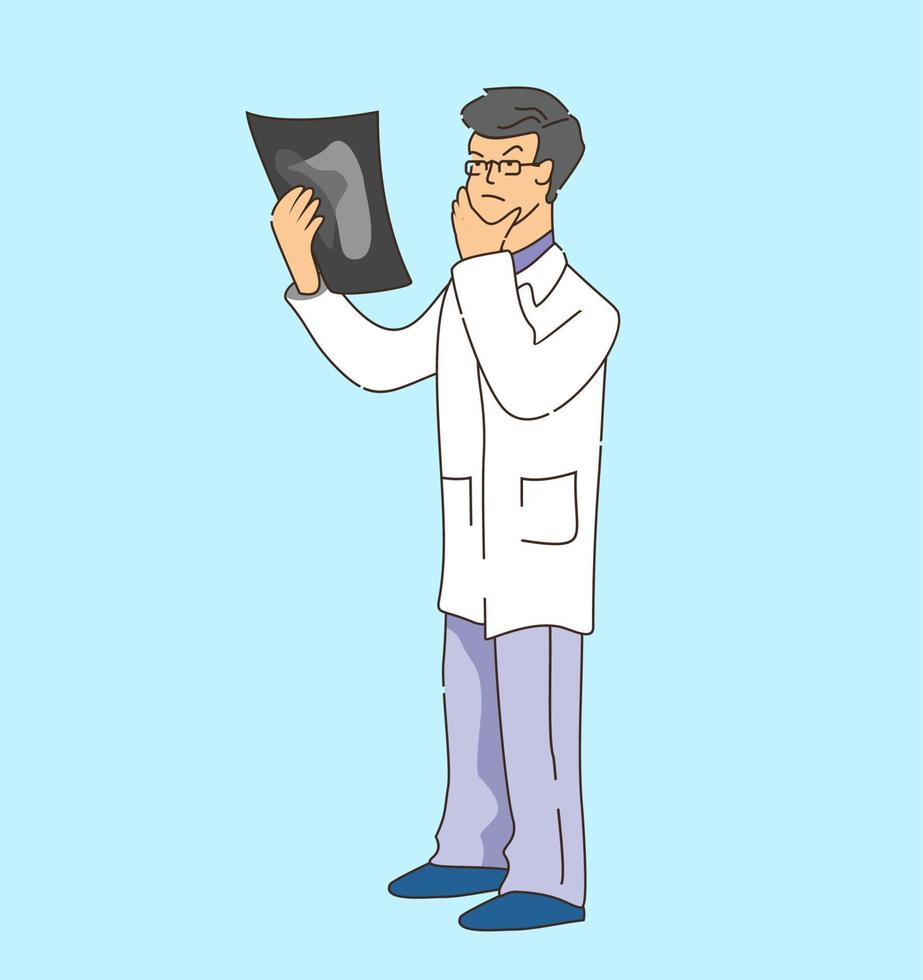

 Le manipulateur en électroradiologie médicale (MERM) Formation : Diplôme d'État (3 ans après le bac) Rôle : Accueillir et installer le patient Réaliser l'examen selon la prescription Vérifier la qualité des images Assurer la radioprotection Contact : C'est le professionnel que vous verrez le plus pendant l'examen
 Le radiologue Formation : Médecin spécialisé (10 ans d'études) Rôle : Prescrire les examens appropriés Interpréter les images Rédiger un compte-rendu pour votre médecin Réaliser certains gestes interventionnels Contact : Vous le verrez surtout pour les échographies ou certains examens complexes
L'infirmier(e) en imagerie Formation : Diplôme d'État d'infirmier (3 ans) Rôle : Poser les perfusions pour les produits de contraste Surveiller les patients fragiles Assister lors des gestes interventionnels Gérer les prélèvements si nécessaires Contact : Surtout présent pour les examens avec injection ou chez les patients hospitalisés